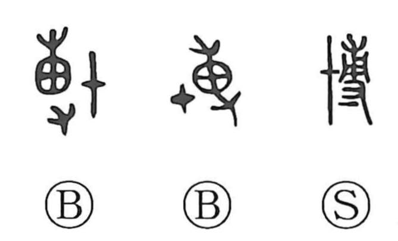

Explanation
Shirakawa treats 博 as a phono-semantic compound. The right-hand element, 尃/専, serves as the phonetic and depicts a hand holding a seedling by its roots to set it into the soil. The left element, written like 十, likely pictures a shield and evokes the act of striking. In bronze inscriptions the character appears in the sense of “to strike, attack,” and is used interchangeably with 搏, as in a record that tells of striking the Xianyun north of the Luo River. The same phonetic 尃 underlies 搏 and 膊. From the associations attached to 専—breadth and multiplicity—the character developed meanings such as “broad, extensive, large, abundant,” and it also came to be used for games of chance, hence its role in words for gambling and board games like sugoroku.